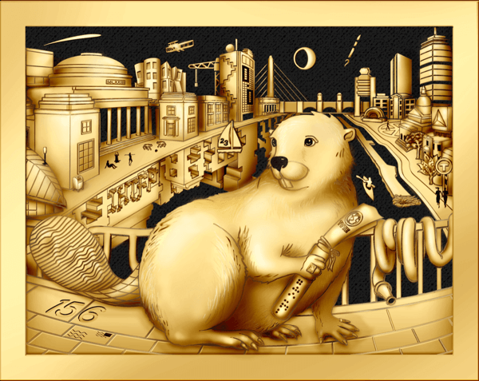
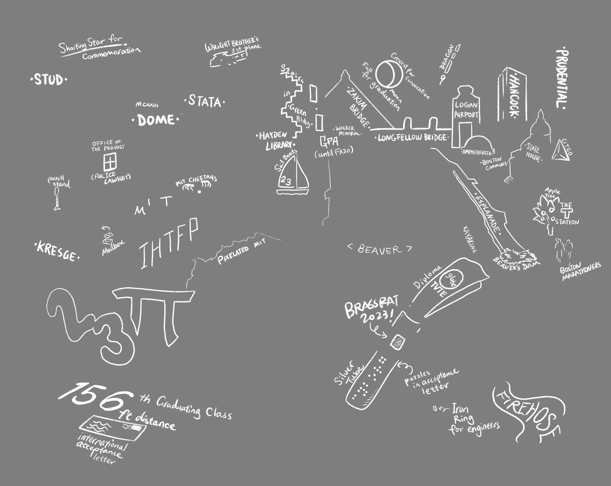
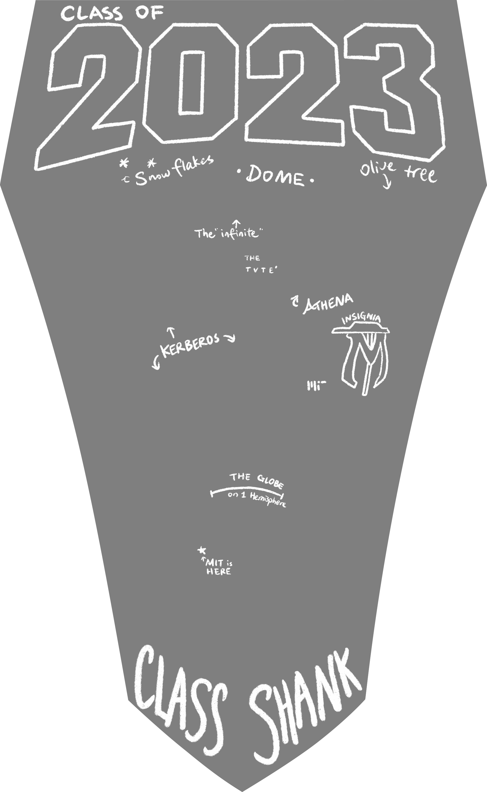
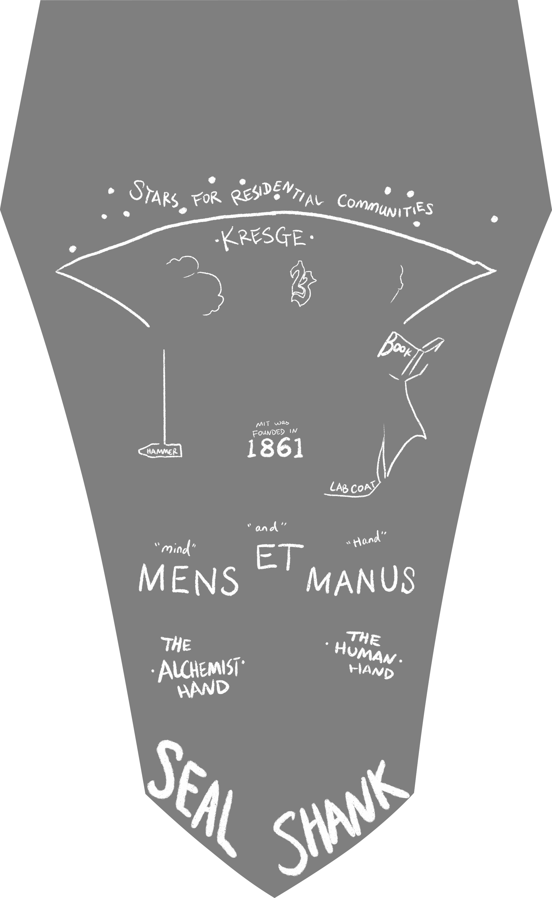
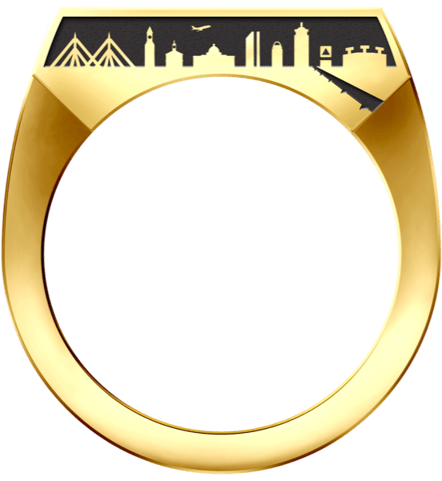
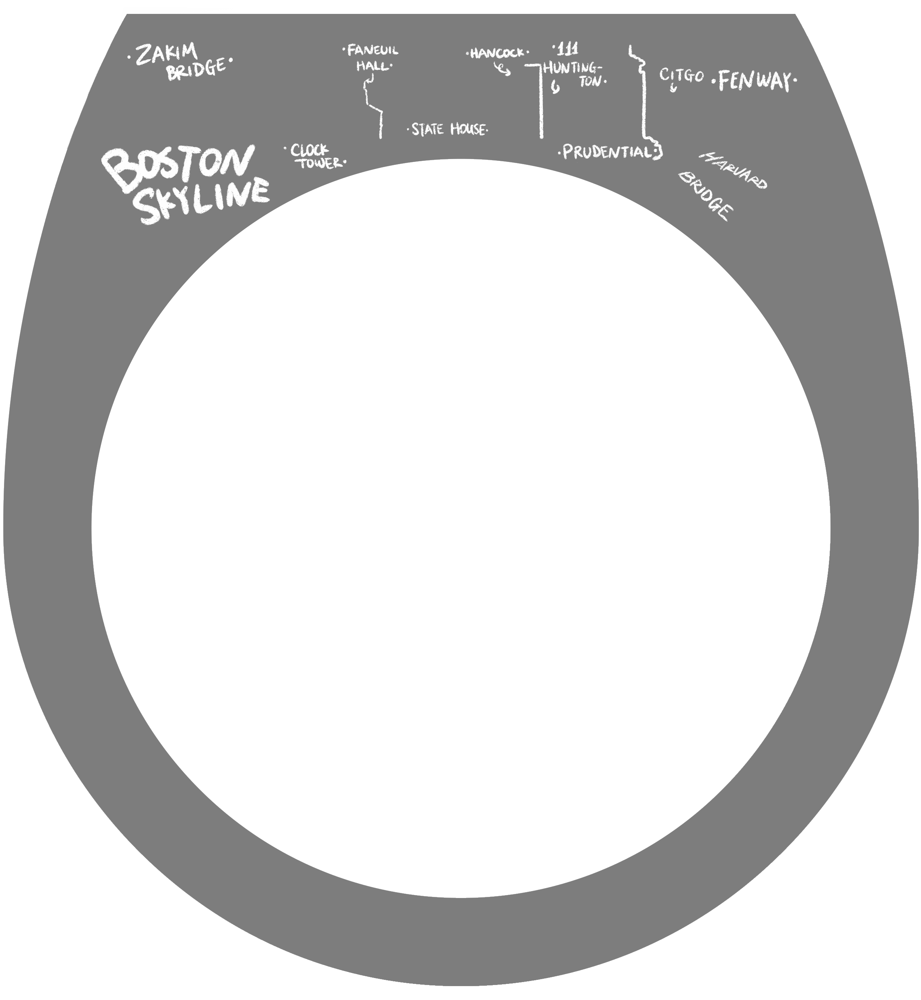
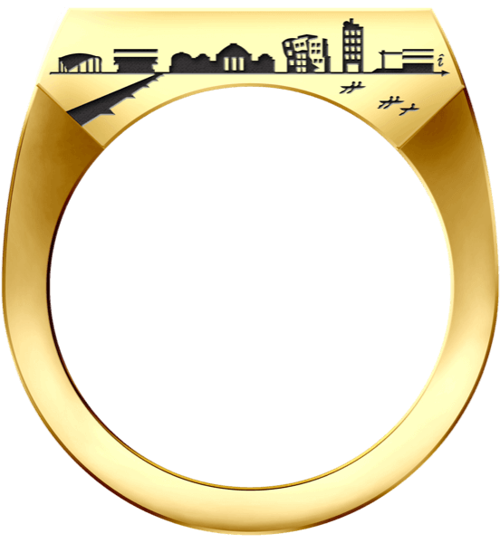
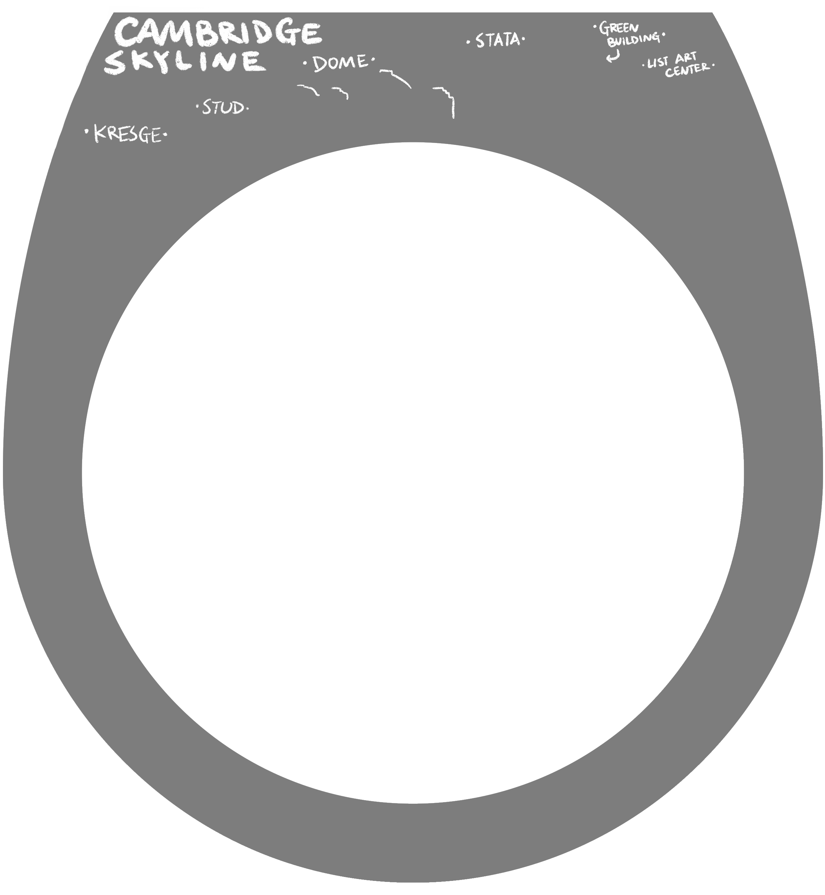
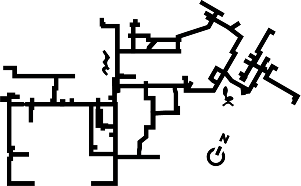
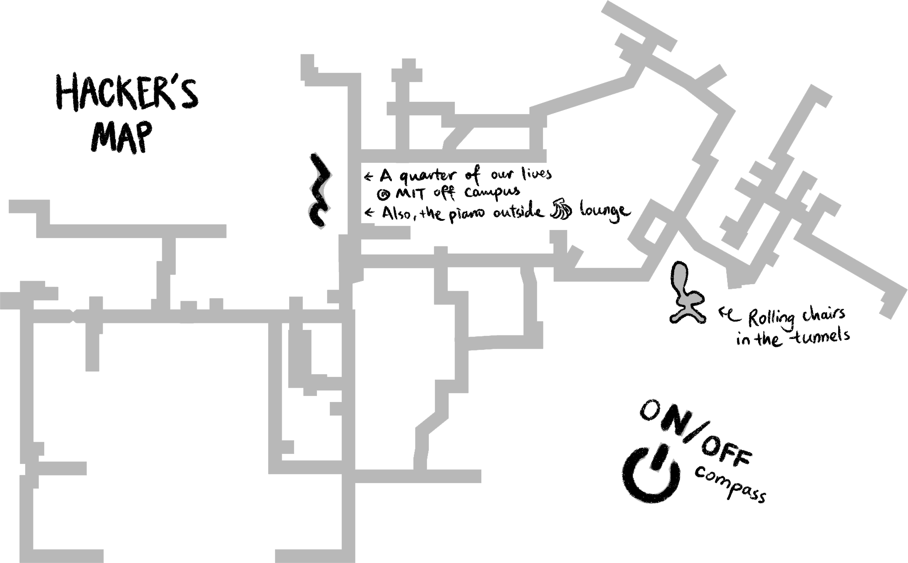

Bezel


The most prominent face of the ring, the bezel of the Brass Rat sits at the very top of the ring and
holds the very mascot that gives the ring its name: the beaver. A symbol chosen for MIT because of
its engineering skill, the beaver has graced the Brass Rat since the first ring was delivered close
to a century ago. This year, the bezel carries on many of the traditional elements of the ring that
can be traced to generations of rings before ours, including the Harvard Bridge, the Charles River,
Smoot markings, and other Boston and Cambridge landmarks that we know and love.
However, our bezel stands out as the first of its kind to have a reflective design component in the Charles River, as well as to include both the Zakim and Longfellow Bridges. The design seeks to acknowledge all the beautiful memories we made on campus and the creative ways in which we came together as a class in the face of these uncertain times.
However, our bezel stands out as the first of its kind to have a reflective design component in the Charles River, as well as to include both the Zakim and Longfellow Bridges. The design seeks to acknowledge all the beautiful memories we made on campus and the creative ways in which we came together as a class in the face of these uncertain times.
Shanks
In the background of the Class Shank is the iconic view of the Great Dome. The infinite corridor, a
hallway students walk down daily, is honored via an infinity sign at its top. On either side of
the dome, two olive trees stand tall, showcasing the passage of time through the changing
seasons. Mighty Kerberos, the hound of Hades, the namesake of our unique MIT emails, sits at
the base of the dome guarding the gates of the Underworld (also known as lobby 10). The
three-headed dog is symbolic of our class's spirit of collaboration, grit, and unity as we
pursue our individual interests and passions in addition to the institute being a throughline
in our lives. Athena lays her hand atop Kerberos' head, guiding the hound and MIT students
in the pursuit of knowledge. An expression of determination graces Athena's visage, mirroring
our class's determination as we overcome challenge. At the base of the shank flies her trusty
owl whose wings frame a globe representing the varied origins of our student body.

Class Shank
Rooting from the original MIT seal, the Class of 2023 Seal Shank is reimagined with a female on
the left holding a hammer representing MIT and its students' commitments to hands-on learning
experience. It also includes a male holding a book, symbolizing wisdom. He dresses in a lab coat, representing
the significance of laboratories both at MIT and around the globe. Between the two figures, the
flame of the lamp spells "23", signifying our class year, held up by a ribbon bearing MIT's
motto "Men et Manus".
In the background, the night's sky embraces twelve stars representing the residential dormitories and FSLIGs from which we find warmth, friendship, and homes away from home. Below the sky sits the Kresge Auditorium, a place that marks our first gathering as a class and symbolizes MIT's creative livelihood. The seal design sits on a handshake between a human hand and one imprinted with patterns resembling the Alchemist statue, symbolizing our day-to-day collaboration with knowledge, technology, and each other in the MIT community.
In the background, the night's sky embraces twelve stars representing the residential dormitories and FSLIGs from which we find warmth, friendship, and homes away from home. Below the sky sits the Kresge Auditorium, a place that marks our first gathering as a class and symbolizes MIT's creative livelihood. The seal design sits on a handshake between a human hand and one imprinted with patterns resembling the Alchemist statue, symbolizing our day-to-day collaboration with knowledge, technology, and each other in the MIT community.

Seal Shank
Skylines


Boston Skyline
The Boston Skyline faces the wearer until they graduate. This is representative of the view
students see while they are living on campus at MIT. During graduation, everyone flips their
ring around, with the Cambridge Skyline now facing the wearer. The Boston Skyline features
a revolving collection of the city's unique yet beloved architecture. All of the included
landmarks are portrayed under the night sky, a sight quite familiar to the nocturnal MIT
student. Our version of the skyline depicts the order of our most-loved Boston landmarks as
they would be seen from Killian Court on the MIT campus. The far left side begins with the
Zakim Bridge. Then, a series of historical and modern Boston icons appear to the right of the
bridge. These serve as a reminder of the dynamic tapestry that surrounds us. Finally, Mass
Ave, a representation of the vein that keeps Boston and Cambridge connected, stretches
along the Harvard Bridge beneath the Boston Skyline.


Cambridge Skyline
The Cambridge Skyline faces the wearer after graduation. The skyline features MIT's most prominent
buildings during the day and spaces special to the Class of 2023. Mass Ave and the Harvard Bridge
cut through the skyline, serving as the metaphorical barrier between work and play (or punt and
tool in MIT lingo). The Stata Center and the Green Building serve to recognize the diversity of
MIT's unique campus architecture. MIT's large athletics presence is symbolized by a pair of crew
boats grouped into a "2" and "3". An axis in the i-hat direction is sandwiched between the skyline
and the river, depicted by an i-hat vector on the right of the skyline illustrating the physical
space between us. While our class may have been spread apart around the world, the shared bonds
we have formed together are what shape our MIT experience.
Hacker's Map
The Hacker's Map is the simplest element on the Brass Rat, yet it represents a longstanding part of
MIT's culture and tradition. It lies hidden under the bezel, just as the tunnels hide underneath
MIT's main buildings, out of sight for the common visitor. For many MIT students though, these
tunnels play a large role in their daily lives, by providing a quick route that avoids the dense
hallway crowds or even by literally acting as a canvas for artists to express themselves through
murals. Most importantly, the map pays homage to the long and rich MIT tradition of hacking, and
it guides the way for any who dare to hack. The Hacker's Map embodies the creativity and ingenuity
that the MIT hacker community is so well known for. Our version of the map was designed with an
unprecedented amount of dimensional accuracy to give MIT hackers the most precise way to navigate
the tunnels.

